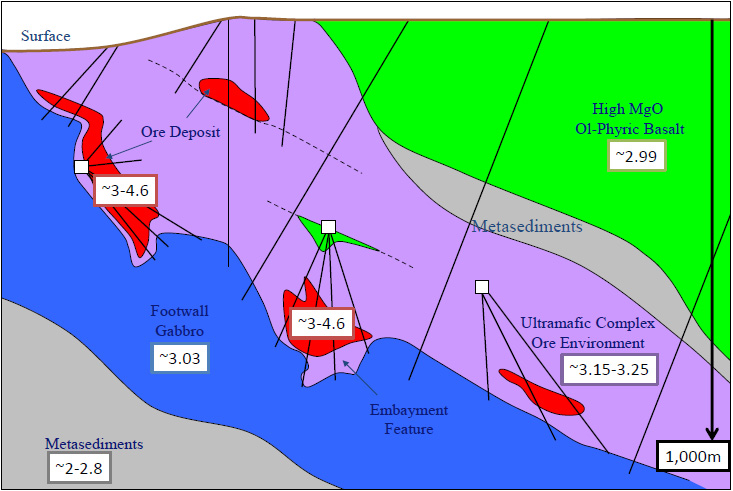
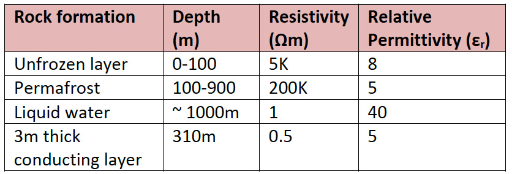
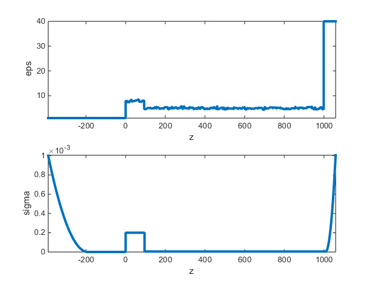
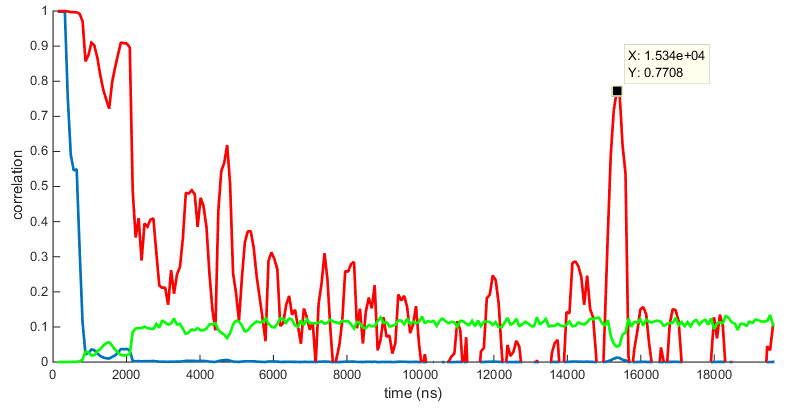
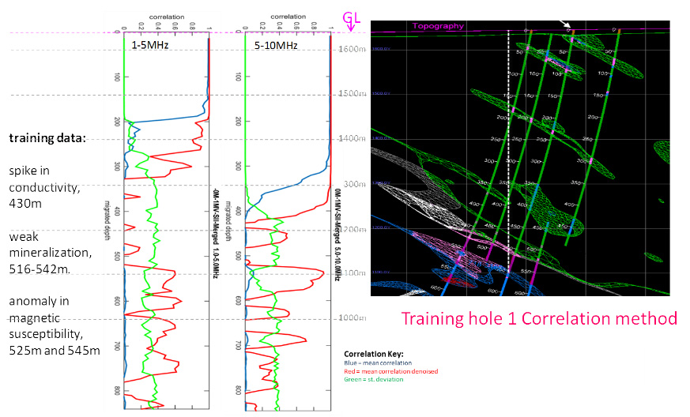
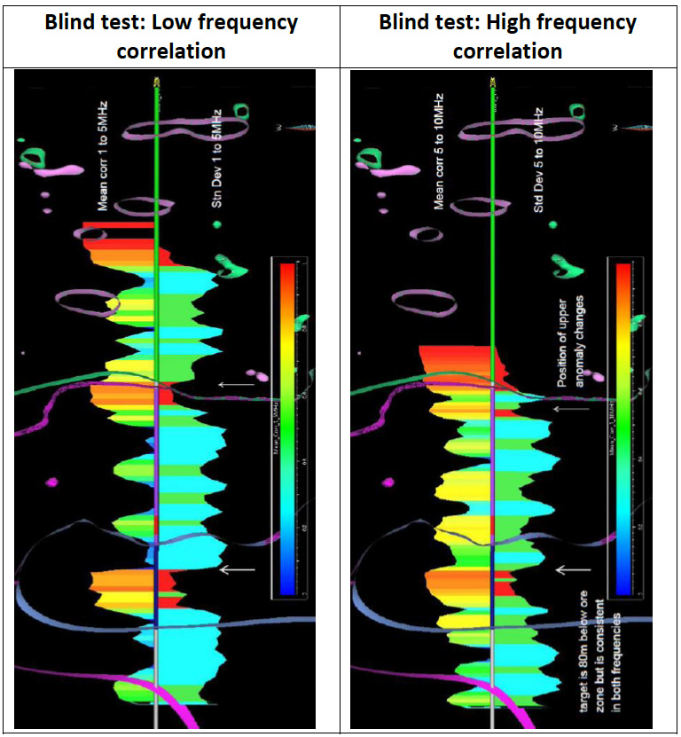
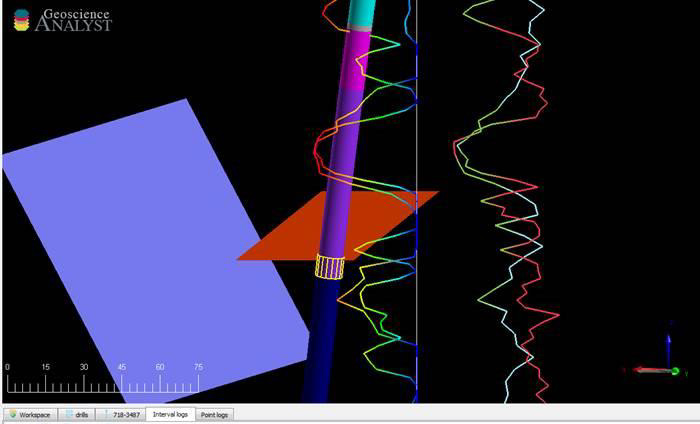
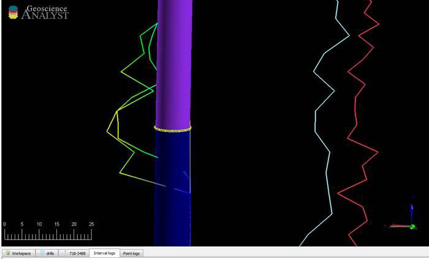

Mapping nickel sulphide deposits through permafrost in the Arctic
Project aims & objectives
The aim of this project was to establish if ADR scanning could assist Glencore in mapping their nickel sulphide deposit located in northern Quebec. The project to date has consisted of: pre-survey geophysical modelling (March 2015), and two field acquisition stages (August 2015 and April 2016). Final results delivered to the client at the end of each phase are outlined.
Geological context
Initial physical properties supplied to Adrok by the client describe the area as ~600m permafrost with highly conducting lenses laid above the target mineralisation. Due to other geophysical methods having difficulty either (a) propagating thorough these highly conducting layers or (b) not having the desired resolution at depth; Glencore wanted to test Adroks’ applicability to survey mineralised zones, non-destructively from the surface. If successful Adrok’s technique shall aid Glencores’ exploration efforts by helping target their drilling program, thus saving time and cost of their exploration phase.
 Figure 1: Geological background showing resistivity’s of different geological formations at the mine site in Northern QuebecThe goals of the ADR survey were: (a) to determine if the signal could propagate through the permafrost, and (b) determine if ADR could propagate through the highly conductive lens to map the mineralisation below. Further to this the client was interested in ADR’s capability to:
- Find NiS pods encased within volcanic mafic ultra-mafic rocks to 1000m below ground level through shielding conductors;
-
Comparison of V-bore data against core hole & other data:
- Existing core holes with core,
- undisclosed core holes (blind)
- Stepping out from the ‘test’ locations to map the exploration areas of specific interest (prospects)
Geophysical modelling
Pulse propagation modelling was conducted using Adrok’s Mawell based EM simulation software to compute 3 different ground model scenarios based on an unfrozen layer (100m thick), permafrost (to 1000m), liquid water (at 1000m) and a 3m conducting lens at 310m. Appropriate resistivity and permittivity’s were agreed with client and assigned to these units as outlined in the table below.
 Table 1: Physical properties of the geological formations input into Adrok’s geophysical model {1}.These physical values were input into the model, as seen in the plots below; relative permittivity versus depth (top) and conductivity versus depth (bottom); all depths are in metres:
 Figure 2: physical properties (permittivity and conductivity) input into EM model {2}Modelling results clearly show that the ADR pulse return of the water layer could be detected without the highly conducting lens.
 Figure 3: Correlation analysis from Adrok's theoretical Maxwell EM model; high correlation depicts reflection of signal; low correlation depicts no return of signalCorrelation plot clearly shows reflection of water layer at 15340ns which equates to 939m depth using an average permittivity of 6. However, when the conducting lens was input into the model, it appeared to absorb much of the pulse energy. The conclusions drawn by Adrok and agreed by the client was that the ADR signal could easily propagate through the permafrost but would have more difficulty in propagating through the highly conductive lens.
Glencore accepted Adroks’ pre-survey modelling results and decided to move on to the survey stage.
Adrok’s results
Adrok acquired data over two site visits during 2015 ad 2016; and collected and processed 9 sites during August 2015 survey; and collected and processed 35 sites during the April 2016 survey.
2015 survey:
ADR correlated well with training sites; one site known to Adrok the other site was a blind test (i.e. Glencore had drilling results, Adrok did not know these results). Adrok successfully reported on a further 7 blind test holes.
 Figure 4: Training hole correlation results; left track Adrok correlation data, right track shows client drill data  Figure 5: Adrok correlation data plotted against client downhole mineralisation data; low and high frequency correlations detect mineralisation at depth2016 survey:
ADR correlated well against blind sites set out by client. Adrok presented results prior to drilling and received positive feedback on two sites after drilling conducted by the client, ADR-062 and ADR-058.
ADR-062 noted a high correlation target at 697m, compared to the drill report by client which reported a mineralized ultramafic 3.6m, 3.83%Ni with a downhole depth from 757.5m to 761.1m
 Figure 6:Olive pyroxenite in 718-3487 at 753m. on ultramafic / gabbro contactADR-058 noted a high correlation target at 612m, compared to the drill report by client which reported conductive sediments, variable from 646.4m - 710.5m.
 Figure 7:MS vein in 718-3488 at 835m elev. on ultramafic / gabbro contactBenefits for client
Adrok successfully completed pre-survey modelling, acquisition and reporting to the client in northern Quebec and overcame logistical and environmental challenges of operating in this area. As ADR has been theoretically and experimentally proven to propagate through local geological layers, and identify mineralised zones at several virtual borehole locations, the tool can be utilised by the client in targeting mineralised deposits. This shall save time and costs for the client’s drilling programme.
References
- {1} Permafrost values from: Electrical Resistivity Study of Permafrost on Ridnitšohkka Fell in Northwest Lapland, Finland. Heikki Vanhala, Petri Lintinen and Antti Ojala, Geophysica (2009), 45(1–2), 103–118
- {2} Simulation based on Adrok’s physical model described in “Ground penetrating abilities of broadband pulsed radar in the 1 to 70 MHz range”; K. van den Doel, J.Jansen, M.Robinson, G. C. Stove, and G. D. C. Stove (2014). SEG Denver 2014 Annual Meeting, pp 1770-1774)